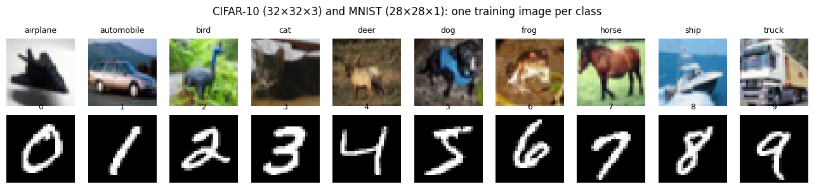
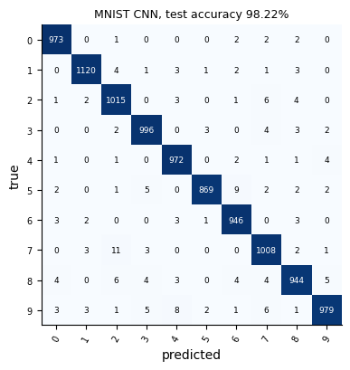
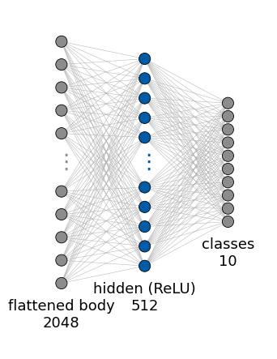
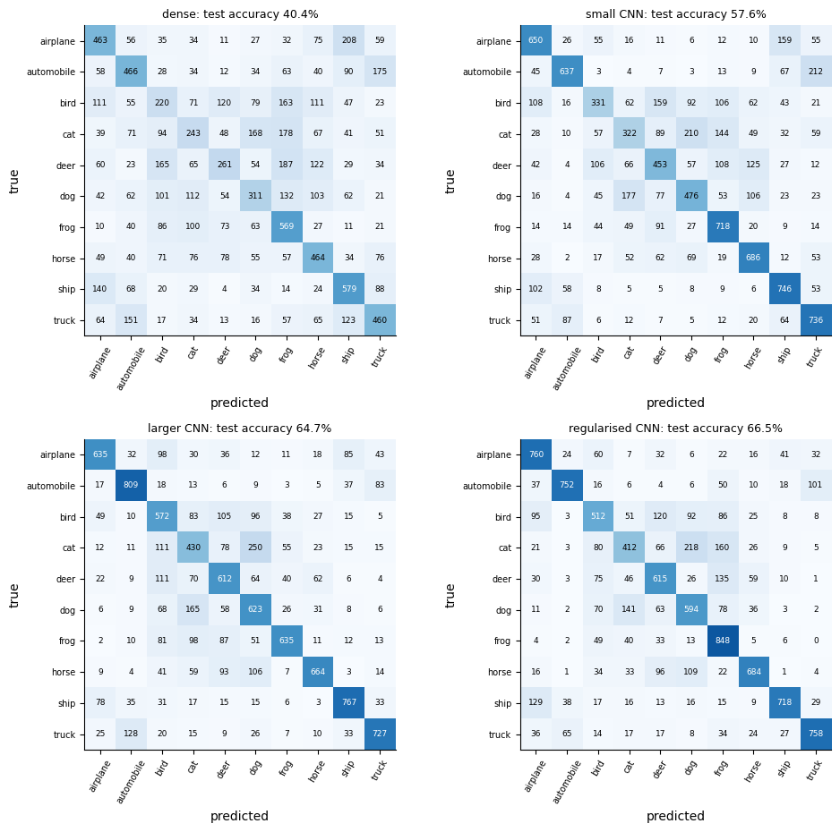
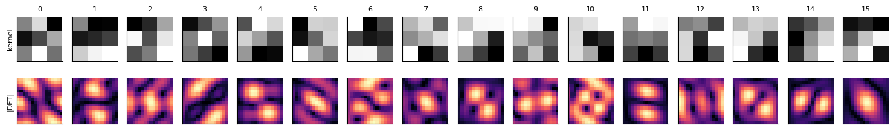
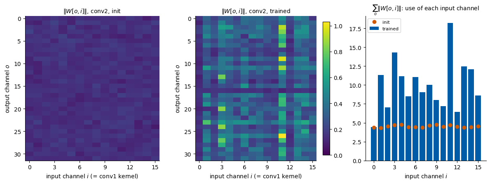
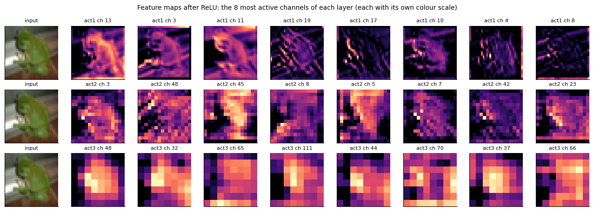
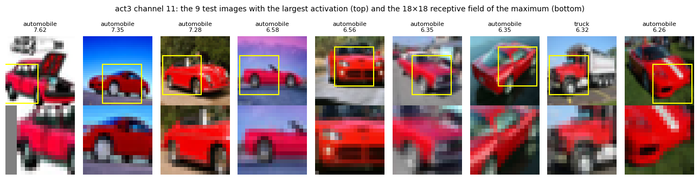
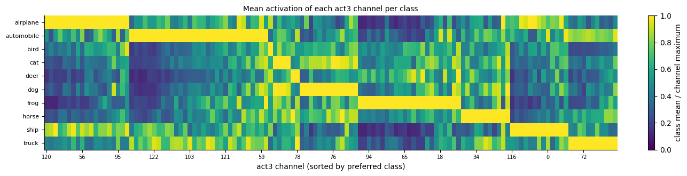
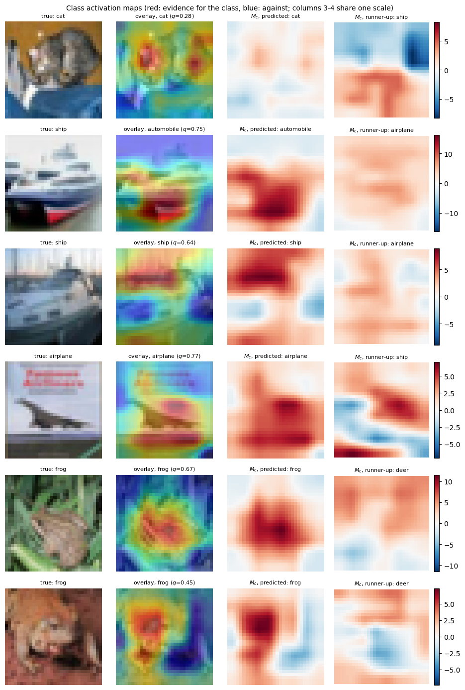

2026/2027 Author: Marcin Płodzień Lab: 013a Reading: Lecture Notes, Chapter 2 (Fundamentals of Deep Learning), Section Convolutional Neural Networks
Lab 013a — CNNs on MNIST and CIFAR-10 in PyTorch
This notebook accompanies the lecture on convolutional neural networks (CNNs). Lab 013b does exactly the same in JAX with Flax; the two notebooks have identical sections, so they can be read side by side. The data are two classic image collections: MNIST (Modified National Institute of Standards and Technology handwritten digits) and CIFAR-10 (Canadian Institute For Advanced Research, 10 classes of small colour photographs).
We begin with the operations a convolutional layer is made of (convolution, padding, stride, pooling and channels), computed with explicit loops and compared with the library. We then train networks of growing size: a dense network and a small CNN on CIFAR-10, a CNN on MNIST, and a larger CIFAR-10 CNN that overfits, together with the same network regularised. With trained networks at hand we open them up: we extract the kernels of a layer and analyse them, look at feature maps, find the images and classes that activate a channel, and compute class activation maps. The notebook closes with transfer learning from CIFAR-10 to MNIST and a table of PyTorch and JAX equivalents.
Everything runs on the CPU (central processing unit). To keep the run time near a quarter of an hour, every network is trained for a few epochs only. The accuracies quoted on the slides come from longer training in Keras; the measured numbers of this notebook are printed next to them.
How to run this notebook in Google Colab 1. Go to https://colab.research.google.com → File → Upload notebook (or open it from Google Drive). 2. Run cells one by one with Shift + Enter. Run them in order: later cells use variables defined earlier. 3. The required packages (numpy, matplotlib, torch) are pre-installed in Colab; no pip install required. 4. MNIST and CIFAR-10 are downloaded once from the official sources (about 12 MB for MNIST, 163 MB for CIFAR-10) and reused on later runs. 5. Trained weights are saved and reused on later runs. 6. If the notebook state becomes inconsistent: Runtime → Restart session and run from the top.
0. The data sets
The first cell hides every graphics card from the frameworks, so that all computations run on the CPU. This must happen before torch is imported.
Code
import osos.environ["JAX_PLATFORMS"] ="cpu"# used by JAX; kept identical in both notebooksos.environ["CUDA_VISIBLE_DEVICES"] =""# no graphics card visible to any frameworkimport time, gzip, pickle, tarfile, copy, urllib.requestfrom collections import OrderedDictimport numpy as npimport matplotlib.pyplot as pltimport torchimport torch.nn as nnimport torch.nn.functional as Ftorch.set_num_threads(min(8, os.cpu_count())) # at most 8 CPU threadstorch.manual_seed(0) # fixes the random initial parametersrng = np.random.default_rng(0) # NumPy generator: subsets, chosen imagesUJBlue, UJNavy, DSOrange, UJGray ="#005CA7", "#002B5C", "#D35A05", "#5A6270"plt.rcParams.update({"axes.spines.top": False, "axes.spines.right": False, "font.size": 10})DATA, RESULTS ="data", "results"os.makedirs(DATA, exist_ok=True); os.makedirs(RESULTS, exist_ok=True)T_START = time.time()print("PyTorch", torch.__version__, "| NumPy", np.__version__, "| threads:", torch.get_num_threads(),"| CUDA available:", torch.cuda.is_available())
MNIST (Y. LeCun, L. Bottou, Y. Bengio and P. Haffner, Gradient-based learning applied to document recognition, Proc. IEEE86, 2278 (1998), doi:10.1109/5.726791) contains \(70\,000\) greyscale images of handwritten digits, \(60\,000\) for training and \(10\,000\) for testing. One sample is a \(28\times28\) image whose pixel values \(0\dots255\) give the ink intensity on a black background; its label is the digit \(0,\dots,9\). One image per class is shown at the end of this section.
MNIST is stored in the IDX format: a short header (a “magic number” whose 4th byte is the number of dimensions, then the size of each dimension as a big-endian 32-bit integer) followed by the raw bytes. We read it with NumPy: first from local copies, otherwise from two public mirrors of the original files.
Shapes: training images \((60000, 28, 28)\), test images \((10000, 28, 28)\), pixel values scaled to \([0,1]\); labels are integers \(0,\dots,9\).
Code
RAW = os.path.join(DATA, "MNIST_raw"); os.makedirs(RAW, exist_ok=True)MIRRORS = ["https://ossci-datasets.s3.amazonaws.com/mnist/", "https://storage.googleapis.com/cvdf-datasets/mnist/"]def mnist_file(name):# return the bytes of one MNIST file: the local copy first, then the mirrors p = os.path.join(RAW, name)if os.path.exists(p): returnopen(p, "rb").read()if os.path.exists(p +".gz"): return gzip.open(p +".gz").read()for m in MIRRORS:try: urllib.request.urlretrieve(m + name +".gz", os.path.join(RAW, name +".gz"))return gzip.open(os.path.join(RAW, name +".gz")).read()exceptException: passraiseRuntimeError("MNIST could not be found or downloaded")def idx(name):# decode an IDX file: images -> (n, rows, cols) uint8, labels -> (n,) uint8 d = mnist_file(name)if d[3] ==3: n, r, c = np.frombuffer(d[4:16], ">i4")return np.frombuffer(d[16:], np.uint8).reshape(n, r, c)return np.frombuffer(d[8:], np.uint8)Xm_tr = idx("train-images-idx3-ubyte").astype(np.float32) /255; ym_tr = idx("train-labels-idx1-ubyte").astype(np.int64)Xm_te = idx("t10k-images-idx3-ubyte").astype(np.float32) /255; ym_te = idx("t10k-labels-idx1-ubyte").astype(np.int64)assert Xm_tr.shape == (60000, 28, 28) and Xm_te.shape == (10000, 28, 28)print("MNIST training:", Xm_tr.shape, " test:", Xm_te.shape, " pixel range:", Xm_tr.min(), Xm_tr.max())
CIFAR-10 (A. Krizhevsky, Learning Multiple Layers of Features from Tiny Images, technical report, University of Toronto, 2009, PDF) contains \(60\,000\) colour photographs of \(32\times32\) pixels, \(50\,000\) for training and \(10\,000\) for testing, \(6000\) per class. One sample holds three numbers per pixel, the red, green and blue intensities \(0\dots255\); its label is one of ten classes: airplane, automobile, bird, cat, deer, dog, frog, horse, ship and truck.
CIFAR-10 in the “python version” is a set of pickled batches: each holds data, an array of shape \((10000, 3072)\) of bytes (first the 1024 red values of a \(32\times32\) image, then 1024 green, then 1024 blue), and labels. The archive is downloaded once from the authors’ page, https://www.cs.toronto.edu/~kriz/cifar.html.
We keep the raw images as uint8 arrays of shape \((N, 32, 32, 3)\) (height, width, channel), convenient for plotting.
Code
CIFAR_URL ="https://www.cs.toronto.edu/~kriz/cifar-10-python.tar.gz"def cifar_dir(): d = os.path.join(DATA, "cifar-10-batches-py")if os.path.exists(os.path.join(d, "test_batch")): return d tgz = os.path.join(DATA, "cifar-10-python.tar.gz")print("downloading CIFAR-10 (163 MB) ...") urllib.request.urlretrieve(CIFAR_URL, tgz)with tarfile.open(tgz) as t: t.extractall(DATA, filter="data")return os.path.join(DATA, "cifar-10-batches-py")def load_batch(d, name):withopen(os.path.join(d, name), "rb") as f: b = pickle.load(f, encoding="bytes") X = b[b"data"].reshape(-1, 3, 32, 32).transpose(0, 2, 3, 1) # (N, 3, 32, 32) -> (N, 32, 32, 3)return X, np.array(b[b"labels"], dtype=np.int64)D_CIFAR = cifar_dir()parts = [load_batch(D_CIFAR, f"data_batch_{i}") for i inrange(1, 6)]Xc_tr_raw = np.concatenate([p[0] for p in parts]); yc_tr = np.concatenate([p[1] for p in parts])Xc_te_raw, yc_te = load_batch(D_CIFAR, "test_batch")withopen(os.path.join(D_CIFAR, "batches.meta"), "rb") as f: CLASSES = [c.decode() for c in pickle.load(f, encoding="bytes")[b"label_names"]]assert Xc_tr_raw.shape == (50000, 32, 32, 3) and Xc_te_raw.shape == (10000, 32, 32, 3)print("CIFAR-10 from", D_CIFAR, "| training:", Xc_tr_raw.shape, " test:", Xc_te_raw.shape)print("classes:", CLASSES)
For training, each colour channel is standardised with the mean \(\mu_c\) and standard deviation \(\sigma_c\) of the training set, \[x \leftarrow \frac{x/255 - \mu_c}{\sigma_c}, \tag{1}\] and the images are put in the PyTorch layout \((N, C, H, W)\): number of images, channels, height, width.
fig, axes = plt.subplots(2, 10, figsize=(13, 3))for c inrange(10): i = np.flatnonzero(yc_tr == c)[0]; axes[0, c].imshow(Xc_tr_raw[i]); axes[0, c].set_title(CLASSES[c], fontsize=9) j = np.flatnonzero(ym_tr == c)[0]; axes[1, c].imshow(Xm_tr[j], cmap="gray"); axes[1, c].set_title(str(c), fontsize=9)for a in axes.ravel(): a.axis("off")fig.suptitle("CIFAR-10 (32×32×3) and MNIST (28×28×1): one training image per class"); plt.tight_layout(); plt.show()

1. Convolution, padding, stride, pooling and channels
1.1 Discrete convolution in one dimension
For a signal \(x[n]\) and a kernel \(g[m]\) with \(K\) entries, the discrete convolution is \[(x*g)[n] = \sum_{m=0}^{K-1} g[m]\,x[n-m]. \tag{2}\] We keep only the outputs for which the kernel lies completely inside the signal (“valid” mode): for a signal of length \(L\) there are \(L-K+1\) of them. Two kernels from the lecture: the difference \(g=(1,0,-1)\) (large where the signal changes, zero where it is flat) and the moving average \(g=(\tfrac13,\tfrac13,\tfrac13)\).
Layers of neural networks compute instead the cross-correlation\[\sum_{m=0}^{K-1} g[m]\,x[n+m], \tag{3}\] which is the convolution with the flipped kernel. We check both relations against NumPy and against torch.nn.functional.conv1d, whose input has shape \((N, C, L)\) and whose kernel has shape \((C_{\text{out}}, C_{\text{in}}, K)\).
Code
x1 = np.array([0, 0, 1, 2, 3, 3, 3, 2, 1, 0, 0], dtype=np.float32) # signal, length L = 11g_diff = np.array([1, 0, -1], dtype=np.float32) # difference kernelg_avg = np.ones(3, dtype=np.float32) /3# moving averagedef conv1d_loops(x, g):# valid convolution (x*g)[n] = sum_m g[m] x[n-m], for n = K-1, ..., L-1 K, L =len(g), len(x) out = np.zeros(L - K +1, dtype=np.float32)for n inrange(K -1, L):for m inrange(K): out[n - K +1] += g[m] * x[n - m]return outfor name, g in [("difference", g_diff), ("moving average", g_avg)]: y_loop = conv1d_loops(x1, g) y_np = np.convolve(x1, g, mode="valid") # true convolution y_torch = F.conv1d(torch.tensor(x1)[None, None], torch.tensor(g[::-1].copy())[None, None])[0, 0].numpy() # flipped kernelassert np.allclose(y_loop, y_np, atol=1e-6) and np.allclose(y_loop, y_torch, atol=1e-6)print(f"{name:15s}", np.round(y_loop, 3))# conv1d with the kernel as it is computes the cross-correlationxcorr = F.conv1d(torch.tensor(x1)[None, None], torch.tensor(g_diff)[None, None])[0, 0].numpy()assert np.allclose(xcorr, np.correlate(x1, g_diff, mode="valid")) and np.allclose(xcorr, -conv1d_loops(x1, g_diff))print("cross-correlation with (1,0,-1):", xcorr, " = minus the convolution, because this kernel is antisymmetric")
difference [ 1. 2. 2. 1. 0. -1. -2. -2. -1.]
moving average [0.333 1. 2. 2.667 3. 2.667 2. 1. 0.333]
cross-correlation with (1,0,-1): [-1. -2. -2. -1. 0. 1. 2. 2. 1.] = minus the convolution, because this kernel is antisymmetric
The difference kernel gives \(+2\) on the rising flank and \(-2\) on the falling flank of the plateau, and \(0\) on the plateau itself: it detects changes. The moving average returns a smoother copy of the signal. For the antisymmetric kernel \((1,0,-1)\), flipping changes the sign, so the cross-correlation is minus the convolution; for the symmetric averaging kernel both are equal.
1.2 Discrete convolution of an image with Sobel kernels
For an image \(x(i,j)\) and a \(k\times k\) kernel \(G(m,n)\), a convolutional layer computes the cross-correlation \[S(i,j) = \sum_{m=0}^{k-1}\sum_{n=0}^{k-1} G(m,n)\,x(i\,s+m,\; j\,s+n), \tag{4}\] where \(x\) has first been padded with \(P\) rows and columns of zeros on each side, and \(s\) is the stride. We use the Sobel kernels of the lecture, \[G_x = \begin{bmatrix}-1&0&1\\-2&0&2\\-1&0&1\end{bmatrix},\qquad G_y=\begin{bmatrix}1&2&1\\0&0&0\\-1&-2&-1\end{bmatrix}, \tag{5}\] on one MNIST digit of shape \((28,28)\), with \(P=1\), \(s=1\); the output then has shape \((28,28)\). F.conv2d takes the input as \((N, C_{\text{in}}, H, W) = (1,1,28,28)\) and the kernel as \((C_{\text{out}}, C_{\text{in}}, k, k) = (1,1,3,3)\).
Code
GX = np.array([[-1, 0, 1], [-2, 0, 2], [-1, 0, 1]], dtype=np.float32) # Sobel x: vertical edgesGY = np.array([[1, 2, 1], [0, 0, 0], [-1, -2, -1]], dtype=np.float32) # Sobel y: horizontal edgesdef xcorr2d_loops(x, G, P=0, s=1):# S(i,j) = sum_{m,n} G(m,n) x_pad(i*s+m, j*s+n), one input channel, one kernel k = G.shape[0] xp = np.pad(x, P) # P zeros on every side O = (x.shape[0] - k +2* P) // s +1# output size (square input) S = np.zeros((O, O), dtype=np.float32)for i inrange(O):for j inrange(O):for m inrange(k):for n inrange(k): S[i, j] += G[m, n] * xp[i * s + m, j * s + n]return Sdigit = Xm_tr[0] # (28, 28), the label is 5Sx, Sy = xcorr2d_loops(digit, GX, P=1), xcorr2d_loops(digit, GY, P=1)lib = F.conv2d(torch.tensor(digit)[None, None], torch.tensor(np.stack([GX, GY]))[:, None], padding=1)[0].numpy() # (2, 28, 28)assert Sx.shape == (28, 28) and np.allclose(Sx, lib[0], atol=1e-5) and np.allclose(Sy, lib[1], atol=1e-5)print("loops and F.conv2d agree; max |S_x| =", np.abs(Sx).max().round(2), " max |S_y| =", np.abs(Sy).max().round(2))
loops and F.conv2d agree; max |S_x| = 3.92 max |S_y| = 3.97
\(S_x\) is positive (red) on the left flank of every vertical stroke, where the intensity rises from left to right, and negative (blue) on the right flank; \(S_y\) does the same for horizontal strokes, with the sign set by whether the top or the bottom is brighter. The magnitude \(\sqrt{S_x^2+S_y^2}\) outlines the digit: an edge map. Inside the strokes and in the background the image is flat and both responses vanish.
1.3 Output size
Along one dimension, an input of size \(W\), a kernel of size \(k\), padding \(P\) and stride \(s\) give \[O = \left\lfloor\frac{W-k+2P}{s}\right\rfloor + 1 . \tag{6}\] We check the formula, and the loop implementation, against F.conv2d for several \((k, P, s)\) on a random \(7\times7\) input and on the CIFAR-10 size \(W=32\).
Code
def out_size(W, k, P, s):return (W - k +2* P) // s +1x7 = np.random.default_rng(1).normal(size=(7, 7)).astype(np.float32)print(" W k P s | formula F.conv2d loops agree")for W, k, P, s in [(7, 3, 0, 1), (7, 3, 1, 1), (7, 3, 1, 2), (7, 5, 0, 1), (7, 5, 2, 2), (7, 2, 0, 2), (32, 3, 1, 1), (32, 3, 1, 2), (32, 5, 0, 1)]: x = x7 if W ==7else np.random.default_rng(2).normal(size=(W, W)).astype(np.float32) G = np.random.default_rng(3).normal(size=(k, k)).astype(np.float32) y = F.conv2d(torch.tensor(x)[None, None], torch.tensor(G)[None, None], padding=P, stride=s)[0, 0].numpy() same = np.allclose(xcorr2d_loops(x, G, P, s), y, atol=1e-4)assert y.shape == (out_size(W, k, P, s),) *2and sameprint(f"{W:2d}{k:2d}{P:2d}{s:2d} | {out_size(W, k, P, s):5d}{y.shape[0]:8d}{same}")
All cases agree. “Same” padding, \[P=\frac{k-1}{2}, \tag{7}\] with \(s=1\) keeps the size (\(32\to32\)); stride 2 halves it (\(32\to16\)); without padding a \(k\times k\) kernel removes \(k-1\) pixels. When \(W-k+2P\) is not divisible by \(s\) (e.g. \(W=7, k=2, s=2\)), the floor drops the last incomplete window.
1.4 Max pooling and average pooling
A pooling window \(2\times2\) with stride 2 replaces each \(2\times2\) block by one number: its maximum or its mean. Global average pooling replaces the whole map by its mean. We use the \(4\times4\) example of the lecture. Reshaping \((4,4)\to(2,2,2,2)\) splits the row index into (block row, row inside block) and the column index likewise, so the reduction over axes 1 and 3 acts inside each block.
max pooling:
[[6. 8.]
[9. 6.]]
average pooling:
[[3.75 5.25]
[5.75 3.75]]
global average pooling: 4.625
The numbers are those of the slide, for the top-left block (maximum and mean) and for the global average: \[\max(1,3,5,6)=6,\qquad \frac{1+3+5+6}{4}=3.75,\qquad \frac{74}{16}=4.625. \tag{8}\] Pooling has no trainable parameters.
1.5 Channels
A colour image has three numbers per pixel, \(x(i,j,c)\) with \(c\in\{R,G,B\}\) (red, green, blue). A convolutional layer with \(C_{\text{in}}\) input channels and \(C_{\text{out}}\) output channels holds \(C_{\text{out}}\) kernels of shape \(C_{\text{in}}\times k\times k\) and one bias \(b_o\) per output channel: \[S_o(i,j) = \sum_{c=1}^{C_{\text{in}}}\sum_{m,n} W[o,c,m,n]\; x_{\text{pad}}(c,\,i+m,\,j+n) + b_o . \tag{9}\] For nn.Conv2d(3, 32, 3) this gives \[3\cdot3\cdot3\cdot32 + 32 = 896 \tag{10}\] parameters. We confirm the count and compare one output value of the layer with the formula evaluated directly.
Code
img = Xc_tr[0] # (3, 32, 32), standardisedconv = nn.Conv2d(in_channels=3, out_channels=32, kernel_size=3, padding=1)print("weight", tuple(conv.weight.shape), "= (C_out, C_in, k, k); bias", tuple(conv.bias.shape))n_par =sum(p.numel() for p in conv.parameters())assert n_par ==3*3*3*32+32==896with torch.no_grad(): S = conv(img[None])[0] # (32, 32, 32): 32 feature maps of 32x32 o, i, j =5, 10, 20# one output channel and one position xp = F.pad(img, (1, 1, 1, 1)) # zero padding P = 1 explicit = (conv.weight[o] * xp[:, i:i +3, j:j +3]).sum() + conv.bias[o]assert torch.allclose(explicit, S[o, i, j], atol=1e-5)print("parameters:", n_par, "| output", tuple(S.shape), f"| S[{o},{i},{j}] layer = {S[o, i, j]:.5f}, explicit sum = {explicit:.5f}")
The three channels are three greyscale images of the same scene. The layer sums the contributions of all three channels for each kernel, so 32 kernels give 32 feature maps, whatever the number of input channels. The 896 parameters do not depend on the image size: one kernel is shared by all \(32\times32\) positions. A dense layer with 32 outputs on the flattened image would need \[3072\cdot32+32 = 98\,336. \tag{11}\]
2. A dense network and a small CNN on CIFAR-10
Training and evaluation
The same tools serve every model of this notebook. The function predict returns the logits (the scores before the softmax) in evaluation mode, in batches of 1000 images. The function train runs the Adam optimiser on the cross-entropy loss with mini-batches of 128 images; after each epoch it records the loss and accuracy on the test set and on the first 10 000 training images, both in evaluation mode (no dropout, no augmentation). To see which classes are mistaken for which, confusion_matrix counts \(C_{ab}\), the number of test images of true class \(a\) predicted as class \(b\); the plot shows each row divided by its sum (the fraction of class \(a\)), with the counts shown in the cells.
Regularisation by weight decay enters through the optimiser: weight_decay in torch.optim.Adam adds \(\text{wd}\cdot\theta\) to every gradient, which is the gradient of the L2 penalty \[\lambda\sum_i\theta_i^2,\qquad \lambda = \frac{\text{wd}}{2}. \tag{12}\]
Code
N_EVAL =10000# training images used to measure the training accuracy@torch.no_grad()def predict(model, X, batch=1000): model.eval()return torch.cat([model(X[k:k + batch]) for k inrange(0, len(X), batch)])def evaluate(model, X, y): logits = predict(model, X)return F.cross_entropy(logits, y).item(), (logits.argmax(1) == y).float().mean().item()def count_params(model):returnsum(p.numel() for p in model.parameters())def train(model, X, y, Xte, yte, epochs, lr=1e-3, weight_decay=0.0, augment=None, batch=128, name="model"): opt = torch.optim.Adam(model.parameters(), lr=lr, weight_decay=weight_decay) hist = {k: [] for k in ("train_loss", "train_acc", "test_loss", "test_acc")} t0 = time.time()for ep inrange(epochs): model.train() # dropout on, batch norm uses batch statistics perm = torch.randperm(len(X))for k inrange(0, len(X), batch): idx = perm[k:k + batch] xb = X[idx] if augment isNoneelse augment(X[idx]) loss = F.cross_entropy(model(xb), y[idx]) opt.zero_grad(); loss.backward(); opt.step()for part, (XX, yy) in (("train", (X[:N_EVAL], y[:N_EVAL])), ("test", (Xte, yte))): l, a = evaluate(model, XX, yy); hist[part +"_loss"].append(l); hist[part +"_acc"].append(a)print(f"{name} epoch {ep +1}/{epochs}: train acc {hist['train_acc'][-1]:.3f}, test acc {hist['test_acc'][-1]:.3f}, "f"test loss {hist['test_loss'][-1]:.3f} ({time.time() - t0:.0f} s)") hist["time"], hist["n_train"] = time.time() - t0, len(X)return histdef confusion_matrix(y_true, y_pred, n=10): cm = np.zeros((n, n), dtype=int) np.add.at(cm, (np.asarray(y_true), np.asarray(y_pred)), 1)return cmdef plot_confusion(ax, cm, labels, title): frac = cm / cm.sum(axis=1, keepdims=True) ax.imshow(frac, cmap="Blues", vmin=0, vmax=1)for a inrange(len(labels)):for b inrange(len(labels)): ax.text(b, a, cm[a, b], ha="center", va="center", fontsize=6.5, color="white"if frac[a, b] >0.5else"black") ax.set_xticks(range(len(labels))); ax.set_xticklabels(labels, rotation=60, fontsize=7) ax.set_yticks(range(len(labels))); ax.set_yticklabels(labels, fontsize=7) ax.set_xlabel("predicted"); ax.set_ylabel("true"); ax.set_title(title, fontsize=9)def save(model, name): path = os.path.join(RESULTS, f"Lab_013a_{name}.pt") torch.save(model.state_dict(), path);return path
Two models with the same training budget
The first model is the dense network of the slides: the \(3072\) inputs (\(32\times32\) pixels, 3 colours) are flattened and fed to 21 sigmoid units and then to 10 outputs, which makes \[3072\cdot21+21+21\cdot10+10 = 64\,753 \tag{13}\] parameters. The second is the small CNN of the slides, except for the activation of the convolution: a convolution \(3\to32\) with \(3\times3\) kernels and padding 1, followed by a rectified linear unit (ReLU, \(\max(0,z)\)), max pooling \(2\times2\), flattening to \(8192\) numbers (\(16\times16\) positions, 32 channels), 21 sigmoid units and 10 outputs, in total \[896 + (8192\cdot21+21) + (21\cdot10+10) = 173\,169 \tag{14}\] parameters.
The slides use a sigmoid after the convolution. With a sigmoid there, our short training stalls: in a test run of Lab 013a (PyTorch, 5 epochs) the test accuracy stayed at 19% (in Lab 013b at 10%), and on 10 000 images a sigmoid convolution with learning rate \(10^{-3}\) stayed at chance level for 3 epochs, while the ReLU version reached 45%. A sigmoid layer feeding 8192 inputs into the dense layer learns very slowly at the start; the long Keras training of the slides gets past this phase, a few epochs do not. We therefore use a ReLU in the convolution and keep the sigmoid in the dense hidden layer.
Both are trained with the same optimiser, learning rate, batch size and number of epochs (EPOCHS_SHORT). The numbers of epochs of all models are collected at the top of the model cell.
Code
EPOCHS_SHORT =3# dense network and small CNN on CIFAR-10EPOCHS_MNIST =2# CNN on MNISTEPOCHS_LARGE =12# larger CNN and regularised CNN, on N_SUB training imagesN_SUB =10000# CIFAR-10 training images for the larger and regularised CNNEPOCHS_GAP =3# global-average-pooling CNN for class activation mapsTRANSFER_STEPS =200# gradient steps per transfer-learning runclass DenseNet(nn.Module):def__init__(self):super().__init__()self.flatten = nn.Flatten()self.fc1 = nn.Linear(3072, 21);self.act1 = nn.Sigmoid()self.fc2 = nn.Linear(21, 10)def forward(self, x): # x: (N, 3, 32, 32)returnself.fc2(self.act1(self.fc1(self.flatten(x))))class SmallCNN(nn.Module):def__init__(self):super().__init__()self.conv1 = nn.Conv2d(3, 32, 3, padding=1);self.act1 = nn.ReLU();self.pool1 = nn.MaxPool2d(2)self.flatten = nn.Flatten()self.fc1 = nn.Linear(16*16*32, 21);self.act2 = nn.Sigmoid()self.fc2 = nn.Linear(21, 10)def forward(self, x): # (N,3,32,32) -> (N,32,32,32) -> (N,32,16,16) -> (N,8192) -> (N,21) -> (N,10) h =self.pool1(self.act1(self.conv1(x)))returnself.fc2(self.act2(self.fc1(self.flatten(h))))torch.manual_seed(0); dense = DenseNet()torch.manual_seed(0); small = SmallCNN()assert count_params(dense) ==64753and count_params(small) ==173169assert small(Xc_tr[:2]).shape == (2, 10)print("parameters: dense", count_params(dense), " small CNN", count_params(small))
parameters: dense 64753 small CNN 173169
Model architectures
A diagram of the layers makes the layer sizes and parameter counts of the two models visible. We use a drawing function of our own and two libraries that read the architecture directly from a PyTorch model; both return for the larger networks later on.
The function draw_network draws a fully connected network as it is usually sketched on a blackboard. Each layer is a column of circles, one per neuron, and thin grey lines join every neuron to every neuron of the next layer, since a dense layer connects all of them. A layer with more than max_nodes neurons is shown by its first and last few neurons with a vertical ellipsis in between, and its true size is written under the column. The height of a column grows with the logarithm of the layer size, so a wide layer is visibly taller than a narrow one. Input and output layers are grey and hidden layers blue; orange is reserved for a latent layer and green for an additional input such as a class label.
For a network of your own, pass the layer sizes from the input to the output, e.g. draw_network([784, 128, 10]); labels, colors and groups (brackets over ranges of columns) are optional, and ax= draws into a panel of an existing figure. An entry of the list may itself be a list of sizes: the column then holds several blocks, which is how two inputs entering the same layer are drawn. Only dense layers can be drawn this way. A convolutional layer is a set of small kernels shared by all positions of the image, not a column of independent neurons, so the convolutional part of a network is left to the library tools further below.
Code
import numpy as npimport matplotlib.pyplot as pltfrom matplotlib.patches import Circle# Colours used for the network drawings: grey for the data (input and output),# blue for hidden layers, orange for the latent (bottleneck) layer and green# for an extra conditioning input such as a one-hot class label.GREY, BLUE, ORANGE, GREEN ="#8C8C8C", "#005CA7", "#EB6709", "#2E8B57"def draw_network(layer_sizes, labels=None, colors=None, max_nodes=10, groups=None, no_input=None, ax=None, node_radius=0.11, x_gap=1.6, min_height=1.0, height_scale=1.1, fontsize=13):"""Draw a fully connected network as columns of circles joined by edges. Parameters ---------- layer_sizes : list One entry per column, from the input to the output. An entry is either an int (the number of neurons of one layer) or a list of ints (several blocks stacked in the same column, e.g. [16, 16] for the mean and the log-variance of a variational autoencoder, or [784, 10] for an image together with a one-hot condition). labels : list, optional Names shown under each column next to the true layer size. An entry may be None (size only), a string, or, for a stacked column, a list with one string per block. colors : list, optional Fill colour of the nodes of each column (or a list with one colour per block). By default the first and the last column are grey and all others blue. max_nodes : int Largest number of circles drawn for one block. A larger block is shown by its first and last few nodes with a vertical ellipsis in between; the true size is always shown in the label. groups : list of (text, first_column, last_column), optional Brackets drawn above a range of columns, e.g. ("encoder", 0, 2). no_input : list of (column, block), optional Blocks that receive no edges from the previous column, e.g. a condition c that enters the decoder from outside. ax : matplotlib Axes, optional Axes to draw into; a new figure is created when None. node_radius, x_gap : float Radius of a circle and horizontal distance between columns. min_height, height_scale : float The height of a block of size s is min_height + height_scale*log10(s), so that a narrow layer is visibly shorter than a wide one. fontsize : int Font size of all labels. Returns ------- ax : the matplotlib Axes with the drawing. """ n =len(layer_sizes)# Turn every entry into a list of blocks, so that a plain layer is a# column with a single block. blocks = [s ifisinstance(s, (list, tuple)) else [s] for s in layer_sizes]if labels isNone: labels = [None] * nif colors isNone: colors = [GREY] + [BLUE] * (n -2) + [GREY] no_input =set(no_input or [])def per_block(value, k):# Repeat a single value for all k blocks of a column, or keep a list.returnlist(value) ifisinstance(value, (list, tuple)) else [value] * kif ax isNone: _, ax = plt.subplots(figsize=(1.9* n +1, 5.5))# ---- Node positions ---------------------------------------------------# Column i sits at x = i * x_gap. Inside a column the blocks are stacked# from top to bottom with a small gap, and the whole column is centred# on y = 0. Each block gets a height that grows with log10 of its size# (but is never too small for its circles to fit without overlapping);# the drawn nodes are spread evenly over that height. nodes = [] # nodes[i][b] = list of (x, y) of block b in column i tops, bottoms = [], [] gap =0.9# vertical space between stacked blocks (holds a label)for i, blk inenumerate(blocks): cols = per_block(colors[i], len(blk)) labs = per_block(labels[i], len(blk)) heights = [max(min_height + height_scale * np.log10(s), (min(s, max_nodes) -1) *2.3* node_radius) for s in blk] total =sum(heights) + gap * (len(blk) -1) x, y_top = i * x_gap, total /2 column = []for s, h, c, lab inzip(blk, heights, cols, labs): shown =min(s, max_nodes)if s <= max_nodes:# Small block: draw every neuron. ys = np.linspace(y_top, y_top - h, shown) if shown >1else np.array([y_top - h /2])else:# ---- Truncation of large layers ----------------------------# Draw max_nodes circles: half in the upper 38 % of the block,# half in the lower 38 %, and a vertical ellipsis in the# middle to show that neurons are omitted. k = max_nodes //2 ys = np.concatenate([np.linspace(y_top, y_top -0.38* h, k), np.linspace(y_top -0.62* h, y_top - h, max_nodes - k)]) ax.text(x, y_top -0.5* h, r"$\vdots$", ha="center", va="center", fontsize=fontsize +6, color=c, zorder=4)for y in ys: ax.add_patch(Circle((x, y), node_radius, facecolor=c, edgecolor="black", lw=0.6, zorder=3)) column.append([(x, y) for y in ys])# ---- Labels of stacked blocks ----------------------------------# In a column with several blocks each block is labelled just# below its last node, in its own colour, on a white box so that# the edges behind do not hide the text.iflen(blk) >1: text =f"{s}"if lab isNoneelsef"{lab}{s}" ax.text(x, y_top - h -0.2, text, ha="center", va="top", fontsize=fontsize -1, color=c, zorder=5, bbox=dict(facecolor="white", edgecolor="none", pad=0.5)) y_top -= h + gap# ---- Label of a single-block column: name and true size below ----iflen(blk) ==1: lab = labs[0] text =f"{blk[0]}"if lab isNoneelsef"{lab}\n{blk[0]}" ax.text(x, -total /2-0.3, text, ha="center", va="top", fontsize=fontsize) nodes.append(column) tops.append(total /2) bottoms.append(-total /2)# ---- Edges ---------------------------------------------------------------# A dense layer connects every neuron of one column with every neuron of# the next, so we draw a thin grey line for every pair of drawn nodes,# skipping the blocks listed in no_input. zorder=1 keeps lines behind# the circles.for i inrange(n -1): sources = [p for block in nodes[i] for p in block]for b, block inenumerate(nodes[i +1]):if (i +1, b) in no_input:continuefor (x0, y0) in sources:for (x1, y1) in block: ax.plot([x0, x1], [y0, y1], color="#B0B0B0", lw=0.35, zorder=1)# ---- Group brackets ------------------------------------------------------# A bracket above columns first..last with its text, e.g. "encoder". y_br =max(tops) +0.45for text, i0, i1 in (groups or []): x0, x1 = i0 * x_gap -0.3, i1 * x_gap +0.3 ax.plot([x0, x0, x1, x1], [y_br -0.12, y_br, y_br, y_br -0.12], color="black", lw=1.2) ax.text((x0 + x1) /2, y_br +0.1, text, ha="center", va="bottom", fontsize=fontsize)# ---- Axes limits ----------------------------------------------------------# Leave room for the brackets above and the labels below. ax.set_xlim(-0.8, (n -1) * x_gap +0.8) ax.set_ylim(min(bottoms) -1.3, y_br + (0.7if groups else0.2)) ax.set_aspect("equal") ax.axis("off")return ax
For the dense network the drawing is the whole model, \(3072\to21\to10\). For the small CNN it is the part after the flattening, \(8192\to21\to10\); the convolution and pooling that produce the \(8192\) numbers appear in the library views. In both models nearly all parameters are the edges between the first two columns, \(64\,512\) and \(172\,032\) weights.
Code
def dense_sizes(*layers):# layer sizes read from the nn.Linear layers of a model: input of the first, then the output of eachreturn [layers[0].in_features] + [l.out_features for l in layers]fig, axes = plt.subplots(1, 2, figsize=(12, 5))for ax, m, labels, title in [(axes[0], dense, ["pixels", "hidden", "classes"], "dense network"), (axes[1], small, ["flattened maps", "hidden", "classes"], "small CNN, dense part")]: sizes = dense_sizes(m.fc1, m.fc2) draw_network(sizes, labels=labels, ax=ax); ax.set_title(title) n_drawn =sum((a +1) * b for a, b inzip(sizes[:-1], sizes[1:])) # weights and biases of the drawn edgesassert n_drawn == count_params(m.fc1) + count_params(m.fc2)print(f"{title}: layers {sizes}, {n_drawn} parameters in the drawn layers, {count_params(m)} in the model")plt.show()
dense network: layers [3072, 21, 10], 64753 parameters in the drawn layers, 64753 in the model
small CNN, dense part: layers [8192, 21, 10], 172273 parameters in the drawn layers, 173169 in the model
The library way to inspect a PyTorch model is torchinfo.summary. It sends one input through the model and prints one row per layer, with the shape of the layer’s output and its number of parameters, followed by the totals, split into trainable and non-trainable parameters. The input is given by its shape, input_size=(1, 3, 32, 32), or as a tensor, input_data=.... We pass a tensor of zeros: with input_size the library draws a random input, which would advance PyTorch’s random number generator and change the training runs that follow. col_names selects the columns and depth the level of nested modules that is expanded; the model itself, including its training or evaluation mode, is left unchanged. Both libraries are installed with pip install torchinfo torchview; the first lines of the code install them when they are missing. The totals reproduce the asserted counts, \(64\,753\) and \(173\,169\).
Code
import importlib.util, subprocess, sysif importlib.util.find_spec("torchinfo") isNoneor importlib.util.find_spec("torchview") isNone: subprocess.check_call([sys.executable, "-m", "pip", "install", "-q", "torchinfo", "torchview", "graphviz"]) # e.g. in Google Colabfrom torchinfo import summaryfrom torchview import draw_graphimport IPython.display as ipdfor name, m in [("dense network", dense), ("small CNN", small)]:print(name)print(summary(m, input_data=torch.zeros(1, 3, 32, 32), col_names=("output_size", "num_params"), verbose=0))
torchview.draw_graph traces the same forward pass and draws it as a graph: every layer is a box with the shapes of its input and output tensors, and the arrows follow the data. With expand_nested=True each submodule (an nn.Sequential inside the model, for example) becomes a frame around its own layers. The result is a Graphviz object; graph.visual_graph.render writes it to a PNG file, which needs the Graphviz program dot (preinstalled in Google Colab). The table is the tool for checking shapes and counting parameters, for instance after a layer has been resized; the graph shows the flow of data, which matters once a model has nested blocks, branches or skip connections. The small CNN has no submodules; the frames appear for the CIFAR-10 models of Section 4.
Code
os.makedirs("figures", exist_ok=True)graph = draw_graph(small, input_data=torch.zeros(1, 3, 32, 32), expand_nested=True, depth=2, graph_dir="LR")graph.visual_graph.graph_attr.update(dpi="200") # left to right, wide enough for a 16:9 slidegraph.visual_graph.render("figures/Lab_013a_small_cnn_graph", format="png", cleanup=True)ipd.display(ipd.Image(filename="figures/Lab_013a_small_cnn_graph.png"))
model params images epochs | train acc test acc | slides (Keras): train / test
dense 64753 50000 3 | 42.2% 40.4% | 46% / 41%
small CNN 173169 50000 3 | 60.6% 57.6% | 82% / 60%
After 3 epochs the dense network reaches 42.2% training and 40.4% test accuracy, close to the 46% / 41% of the slides: it is already near its limit. The small CNN, with the same budget, reaches 60.6% / 57.6%, close to the slide’s test accuracy of 60%; its training accuracy is still far below the slide’s 82% because it has not yet had time to overfit. The CNN has more parameters (173 169 against 64 753), but almost all of them sit in the dense layer after the flattening (\(172\,053\), the middle term of equation (14)); the convolution itself has 896. The gain comes from the structure: 32 small kernels shared over all positions, instead of one weight per pixel. The confusion matrices (Section 4) show where both still fail: the dense network sends 208 of the 1000 aeroplanes to “ship” (blue background in both).
3. A CNN on MNIST
Architecture (rectified linear unit, ReLU, \(\max(0,z)\), as activation):
The parameter counts of the table are \[1\cdot9\cdot16+16=160,\qquad 16\cdot9\cdot32+32=4640,\qquad 1568\cdot10+10=15\,690, \tag{15}\] in total \(20\,490\) parameters. Before training we keep a copy of the initial parameters, to compare kernels at initialisation and after training in Section 5.
pred_m = predict(mnist_cnn, Xm_te_t).argmax(1).numpy()cm_m = confusion_matrix(ym_te, pred_m)fig, ax = plt.subplots(figsize=(4.6, 4.2))plot_confusion(ax, cm_m, [str(d) for d inrange(10)], f"MNIST CNN, test accuracy {100* (pred_m == ym_te).mean():.2f}%")plt.tight_layout(); plt.show()off = cm_m - np.diag(np.diag(cm_m)); a, b = np.unravel_index(off.argmax(), off.shape)print(f"test errors: {off.sum()} of 10000; most frequent confusion: {a} predicted as {b} ({off[a, b]} times)")

test errors: 178 of 10000; most frequent confusion: 7 predicted as 2 (11 times)
With 20 490 parameters and 2 epochs the CNN reaches 98.22% test accuracy on MNIST (178 errors in 10 000), against about 98% training accuracy: no overfitting. The errors are spread thinly; the most frequent single confusion is a 7 read as a 2 (11 times), two digits whose strokes differ by a short bar.
4. Capacity and regularisation of CNNs on CIFAR-10
Larger CNN and regularised CNN
Both models share one class, CifarCNN, with a convolutional body and a dense head (the names matter later: Section 10 reuses the body):
layer (body)
output shape
conv1\(3\to32\), \(3\times3\), pad 1, [bn1], ReLU act1, pool1
To see overfitting within a few minutes of CPU time, these two models are trained on the first N_SUB = 10 000 training images (about 1000 per class) for EPOCHS_LARGE = 12 epochs; the test set is the full set of 10 000 test images. The training accuracy is measured on the 10 000 training images used. With fewer training images a network memorises them sooner, so the gap between training and test accuracy opens after a few epochs instead of a few tens of epochs on the full set.
Layers in brackets exist only in the regularised model (in the larger model they are identities). The regularised model combines the four techniques of the lecture. Batch normalisation (bn) normalises each channel over the mini-batch and rescales it with trainable \(\gamma,\beta\), \[\hat x = \frac{x-\mu_B}{\sqrt{\sigma_B^2+\epsilon}},\qquad x\leftarrow\gamma\hat x+\beta; \tag{16}\] at test time running averages of \(\mu_B,\sigma_B^2\) are used. Dropout (drop), with rates 0.2, 0.3 and 0.4, sets each unit to zero with that probability during training. L2 weight decay uses \(\text{wd}=5\cdot10^{-4}\). Finally, data augmentation flips each training image left–right with probability 1/2 and shifts it by up to 4 pixels in each direction (zero padding, then a random \(32\times32\) crop).
parameters: larger 1147466 regularised 1147914 (the difference is the batch-norm scales and shifts)
body output: (2, 128, 4, 4)
With depth=2 the summaries list the layers inside the body and the head. The identities of the larger model carry no parameters, and the two models differ by the scales and shifts of batch normalisation, \[2\cdot(32+64+128)=448 \tag{17}\] parameters. The dense head, drawn below, has \[2048\cdot512+512=1\,049\,088 \tag{18}\] parameters in its first layer alone, over 90% of the model. The graph of the regularised model shows the effect of expand_nested=True: body and head are frames around their own layers.
Code
for name, m in [("larger CNN", larger), ("regularised CNN", regular)]:print(name)print(summary(m, input_data=torch.zeros(1, 3, 32, 32), col_names=("output_size", "num_params"), depth=2, verbose=0))
sizes = dense_sizes(larger.head.fc1, larger.head.fc2)draw_network(sizes, labels=["flattened body", "hidden (ReLU)", "classes"])n_drawn =sum((a +1) * b for a, b inzip(sizes[:-1], sizes[1:]))assert n_drawn == count_params(larger.head)print(f"head: layers {sizes}, {n_drawn} of the {count_params(larger)} parameters of the larger CNN")plt.show()
head: layers [2048, 512, 10], 1054218 of the 1147466 parameters of the larger CNN

Code
graph = draw_graph(regular, input_data=torch.zeros(1, 3, 32, 32), expand_nested=True, depth=2, graph_dir="LR")graph.visual_graph.graph_attr.update(dpi="200") # left to right, wide enough for a 16:9 slidegraph.visual_graph.render("figures/Lab_013a_regularised_cnn_graph", format="png", cleanup=True)ipd.display(ipd.Image(filename="figures/Lab_013a_regularised_cnn_graph.png"))
The augmented copies are mirrored or shifted versions of the same objects (the black bands are the zero padding, which after standardisation is the mean colour; it appears dark here because the plot undoes the standardisation). Each epoch the network sees a new random variant of every training image.
fig, axes = plt.subplots(2, 2, figsize=(10, 9.4))cm_cifar = {}for a, n inzip(axes.ravel(), cols): pred = predict(models[n], Xc_te).argmax(1).numpy() cm_cifar[n] = confusion_matrix(yc_te, pred) plot_confusion(a, cm_cifar[n], CLASSES, f"{n}: test accuracy {100* (pred == yc_te).mean():.1f}%")plt.tight_layout(); plt.show()for n in cols: off = cm_cifar[n] - np.diag(np.diag(cm_cifar[n])); a, b = np.unravel_index(off.argmax(), off.shape)print(f"{n:16s} most frequent confusion: {CLASSES[a]} -> {CLASSES[b]} ({off[a, b]} of 1000)")

dense most frequent confusion: airplane -> ship (208 of 1000)
small CNN most frequent confusion: automobile -> truck (212 of 1000)
larger CNN most frequent confusion: cat -> dog (250 of 1000)
regularised CNN most frequent confusion: cat -> dog (218 of 1000)
Measured on 10 000 training images and 12 epochs, the larger CNN reaches 96.9% training but only 64.7% test accuracy (slides: 100% / 71% on all 50 000 images with long training). Its test loss is smallest at epoch 7 (1.10) and then rises to 1.45 while the training loss keeps falling to 0.13: the network memorises the training images, the definition of overfitting. The regularised CNN, with batch normalisation, dropout, weight decay and augmentation, ends at 70.1% / 66.5% (slides: 90% / 82%): the training and test curves stay together, the test loss is still falling at epoch 12 (0.97), and the test accuracy is already 1.8 points higher than for the larger CNN. Regularisation does not make training faster; it makes the measured training performance a reliable estimate of the test performance and leaves room for further training, which on the slides gave 82%. In all four confusion matrices the largest confusion is between animals of similar shape and colour, most of all cat and dog (larger CNN: 250 cats predicted as dog).
5. Kernels of a layer
Every parameter of a PyTorch model has a name, the path of attributes that leads to it. model.named_parameters() lists them, and model.get_submodule("body.conv1") returns a layer from its name. The weight of nn.Conv2d has shape \((C_{\text{out}}, C_{\text{in}}, k_h, k_w)\). Axis 0 is the output channel \(o\), with one kernel per feature map produced; axis 1 is the input channel \(c\), because the kernel has one \(k_h\times k_w\) slice per input channel; axes 2 and 3 are the kernel rows \(m\) and columns \(n\). (Flax stores the same numbers as \((k_h, k_w, C_{\text{in}}, C_{\text{out}})\), see Lab 013b.)
Code
for name, p in mnist_cnn.named_parameters():print(f"{name:14s}{str(tuple(p.shape)):18s}{p.numel():6d} parameters")W1_mnist = mnist_cnn.get_submodule("conv1").weight.detach().clone() # (16, 1, 3, 3)W1_cifar = regular.get_submodule("body.conv1").weight.detach().clone() # (32, 3, 3, 3)assert torch.equal(W1_cifar, dict(regular.named_parameters())["body.conv1.weight"])print("MNIST conv1:", tuple(W1_mnist.shape), " CIFAR body.conv1:", tuple(W1_cifar.shape))
To display a kernel as an image, each kernel is rescaled separately to \([0,1]\): \((W-\min W)/(\max W-\min W)\). The absolute scale is lost; only the pattern is shown. MNIST kernels have one input channel and are shown in grey; CIFAR-10 kernels have three input channels, which we display as the red, green and blue of a \(3\times3\) colour image (this needs the axes reordered to \((k_h, k_w, C_{\text{in}})\)).
Code
def normalise01(w):# rescale each kernel (first axis) separately to [0, 1] w = np.asarray(w, dtype=np.float64) lo = w.reshape(len(w), -1).min(1).reshape(-1, *[1] * (w.ndim -1)); hi = w.reshape(len(w), -1).max(1).reshape(-1, *[1] * (w.ndim -1))return (w - lo) / (hi - lo +1e-12)def show_kernels(axes, K, cmap=None):# K: (n, kh, kw) greyscale or (n, kh, kw, 3) colourfor a, k inzip(axes, normalise01(K)): a.imshow(k, cmap=cmap, vmin=0, vmax=1); a.set_xticks([]); a.set_yticks([])W1m_init = mnist_init["conv1.weight"][:, 0].numpy(); W1m = W1_mnist[:, 0].numpy() # (16, 3, 3)W1c_init = regular_init["body.conv1.weight"].permute(0, 2, 3, 1).numpy() # (32, 3, 3, 3): (out, kh, kw, in)W1c = W1_cifar.permute(0, 2, 3, 1).numpy()fig, axes = plt.subplots(2, 16, figsize=(13, 2.2))show_kernels(axes[0], W1m_init, "gray"); show_kernels(axes[1], W1m, "gray")axes[0, 0].set_ylabel("init", fontsize=8); axes[1, 0].set_ylabel("trained", fontsize=8)fig.suptitle("MNIST CNN, conv1: 16 kernels 3×3 (each rescaled to [0,1])", fontsize=10); plt.tight_layout(); plt.show()fig, axes = plt.subplots(4, 16, figsize=(13, 3.8))show_kernels(axes[:2].ravel(), W1c_init); show_kernels(axes[2:].ravel(), W1c)axes[0, 0].set_ylabel("init", fontsize=8); axes[2, 0].set_ylabel("trained", fontsize=8)fig.suptitle("Regularised CIFAR-10 CNN, body.conv1: 32 kernels 3×3×3 shown as RGB (each rescaled to [0,1])", fontsize=10)plt.tight_layout(); plt.show()for n, a, b in [("MNIST", W1m_init, W1m), ("CIFAR", W1c_init, W1c)]: rel = np.linalg.norm(b - a) / np.linalg.norm(a)print(f"{n} conv1: relative change ||W_trained - W_init|| / ||W_init|| = {rel:.2f}")
The relative change of the first-layer kernels during training is 0.72 for the MNIST CNN and 0.27 for the CIFAR-10 CNN, so in both cases the trained kernels are still recognisably their random initial patterns, modified rather than replaced (compare the rows “init” and “trained”). A \(3\times3\) kernel has only 9 (or 27) numbers: pictures of such kernels are hard to read by eye, and the clean oriented edge detectors seen in the literature come from larger first-layer kernels (e.g. \(11\times11\) in AlexNet) trained much longer. The next section therefore measures the kernels with numbers instead.
6. Analysis of the kernels of a layer
We analyse the 16 first-layer kernels \(W_o\) (\(o=1,\dots,16\), each \(3\times3\)) of the MNIST CNN with four quantities each.
The first two are the norm and the mean, \[\|W_o\| = \Big(\sum_{m,n} W_o(m,n)^2\Big)^{1/2},\qquad \bar W_o = \frac19\sum_{m,n}W_o(m,n). \tag{19}\] The norm is the overall strength of the kernel; the response to a uniform patch of value 1 is \(9\bar W_o\). A kernel with a large mean relative to its norm is a low-pass (smoothing, brightness) filter, while a kernel with zero mean ignores uniform regions and responds only to changes, like an edge detector. The ratio \[\frac{9\bar W_o}{3\|W_o\|} \tag{20}\] is the cosine similarity of \(W_o\) with the uniform kernel.
The third quantity compares each kernel with the edge detectors of Section 1: the cosine similarity with the Sobel kernels, \[\cos(W_o, G) = \frac{\sum_{m,n}W_o(m,n)\,G(m,n)}{\|W_o\|\,\|G\|}, \tag{21}\] between \(-1\) and \(1\). The fourth is a picture rather than a number: the magnitude of the two-dimensional discrete Fourier transform (DFT), \(|\hat W_o(k_x,k_y)|\), of the kernel zero-padded to \(16\times16\), with the zero frequency in the centre. A low-pass kernel concentrates at the centre; an edge detector has two lobes along the direction across the edge.
Code
K = W1m.astype(np.float64) # (16, 3, 3) trained conv1 kernelsnorms = np.linalg.norm(K.reshape(16, -1), axis=1)means = K.reshape(16, -1).mean(axis=1)cos_uniform =9* means / (3* norms) # cosine with the all-ones kernel (norm 3)cos =lambda A, G: (A * G).sum(axis=(1, 2)) / (np.linalg.norm(A.reshape(len(A), -1), axis=1) * np.linalg.norm(G))cos_x, cos_y = cos(K, GX), cos(K, GY)assert np.allclose(cos_uniform, cos(K, np.ones((3, 3))))print(" o norm mean cos(uniform) cos(Gx) cos(Gy)")for o inrange(16):print(f"{o:2d}{norms[o]:.3f}{means[o]:+.3f}{cos_uniform[o]:+.2f}{cos_x[o]:+.2f}{cos_y[o]:+.2f}")
NF =16spec = np.abs(np.fft.fftshift(np.fft.fft2(K, s=(NF, NF)), axes=(1, 2))) # (16, 16, 16) |DFT| of padded kernelsfreqs = np.fft.fftshift(np.fft.fftfreq(NF)) # cycles per pixel, -0.5 ... 0.4375fig, axes = plt.subplots(2, 16, figsize=(14, 2.4))show_kernels(axes[0], K, "gray")for o, a inenumerate(axes[1]): a.imshow(spec[o], cmap="magma", extent=[freqs[0], freqs[-1], freqs[-1], freqs[0]]); a.set_xticks([]); a.set_yticks([]) axes[0, o].set_title(f"{o}", fontsize=8)axes[0, 0].set_ylabel("kernel", fontsize=8); axes[1, 0].set_ylabel("|DFT|", fontsize=8)plt.tight_layout(); plt.show()dc = spec[:, NF //2, NF //2] / spec.reshape(16, -1).max(1) # zero-frequency shareprint("|DFT| at zero frequency / maximum of |DFT| per kernel:", np.round(dc, 2))

|DFT| at zero frequency / maximum of |DFT| per kernel: [0.37 0.14 1. 0. 0.39 1. 0.22 1. 0.63 0.67 0.71 0. 0.76 0.37
0.1 1. ]
Several trained kernels are close to the Sobel kernels: kernel 11 has \(\cos(W,G_y)=+0.96\) and zero mean (a horizontal-edge detector), kernel 14 has \(\cos(W,G_x)=+0.90\) (a vertical-edge detector), kernel 1 has \(\cos(W,G_y)=-0.79\) (a horizontal edge of the opposite sign). Their Fourier magnitudes vanish at zero frequency (ratio 0.00 for kernels 3 and 11, 0.10 for kernel 14) and show two lobes along the direction across the edge. Other kernels are low-pass: kernels 5, 7 and 15 have cosine 0.72–0.81 with the uniform kernel, and their Fourier magnitude has its maximum at zero frequency (ratio 1.00). The layer has thus split into edge detectors of several orientations and smoothing / brightness filters, without being told to.
Input channels of the second layer
The second layer conv2 has weight shape \((32,16,3,3)\): for every output channel \(o\) and input channel \(i\) there is one \(3\times3\) slice \(W[o,i]\). The matrix of norms \(\|W[o,i]\|\) (\(32\times16\)) shows how strongly output channel \(o\) reads input channel \(i\), before and after training.
Code
W2 = mnist_cnn.get_submodule("conv2").weight.detach().numpy() # (32, 16, 3, 3)W2_init = mnist_init["conv2.weight"].numpy()N2, N2_init = np.linalg.norm(W2, axis=(2, 3)), np.linalg.norm(W2_init, axis=(2, 3)) # (32, 16)assert N2.shape == (32, 16)fig, axes = plt.subplots(1, 3, figsize=(12, 4.6), gridspec_kw={"width_ratios": [1, 1, 0.9]})vmax = N2.max()for a, M, t in [(axes[0], N2_init, "init"), (axes[1], N2, "trained")]: im = a.imshow(M, cmap="viridis", vmin=0, vmax=vmax, aspect="auto"); a.set_title(f"$\\|W[o,i]\\|$, conv2, {t}", fontsize=10) a.set_xlabel("input channel $i$ (= conv1 kernel)"); a.set_ylabel("output channel $o$"); a.set_xticks(range(0, 16, 3))plt.colorbar(im, ax=axes[1], fraction=0.05)axes[2].bar(range(16), N2.sum(0), color=UJBlue, label="trained"); axes[2].plot(range(16), N2_init.sum(0), "o", color=DSOrange, label="init")axes[2].set_xlabel("input channel $i$"); axes[2].set_xticks(range(0, 16, 3)); axes[2].set_title("$\\sum_o \\|W[o,i]\\|$: use of each input channel", fontsize=10); axes[2].legend(fontsize=8)plt.tight_layout(); plt.show()print("least used input channels (trained):", np.argsort(N2.sum(0))[:3], " with conv1 norms", np.round(norms[np.argsort(N2.sum(0))[:3]], 3))print("ratio of largest to smallest entry: init", round(N2_init.max() / N2_init.min(), 1), " trained", round(N2.max() / N2.min(), 1))

least used input channels (trained): [ 0 12 2] with conv1 norms [0.512 0.683 0.681]
ratio of largest to smallest entry: init 2.7 trained 10.9
At initialisation all entries of \(\|W[o,i]\|\) are similar (largest/smallest = 2.7). After training the ratio is 10.9 and clear columns appear: input channel 11, the horizontal-edge detector of Section 6, is read strongly by many output channels, while channel 0, the conv1 kernel with the smallest norm (0.512), is the least used, followed by channels 12 and 2, two low-pass kernels. The second layer builds its features mainly from the edge maps.
7. Feature maps
A forward hook is a function that PyTorch calls every time a given layer has computed its output; it receives (module, input, output). We register one hook on each ReLU after a convolution of the regularised CIFAR-10 CNN (body.act1, body.act2, body.act3), store the outputs in a dictionary, and remove the hooks afterwards (otherwise they would keep running in every later forward pass).
Shapes for one image: act1\((1,32,32,32)\), act2\((1,64,16,16)\), act3\((1,128,8,8)\).
Code
LAYERS = ["body.act1", "body.act2", "body.act3"]def get_activations(model, x, layers): store, handles = {}, []for name in layers:def hook(module, inp, out, name=name): # name=name freezes the loop variable store[name] = out.detach() handles.append(model.get_submodule(name).register_forward_hook(hook))try:with torch.no_grad(): model.eval(); logits = model(x)finally:for h in handles: h.remove() # always remove the hooksreturn store, logitsi_img =7acts, logits = get_activations(regular, Xc_te[i_img:i_img +1], LAYERS)for n in LAYERS: print(f"{n:10s}{tuple(acts[n].shape)} spatial size {acts[n].shape[-1]}x{acts[n].shape[-2]}")assertall(len(m._forward_hooks) ==0for m in regular.modules())print("true class:", CLASSES[yc_te[i_img]], "| predicted:", CLASSES[logits.argmax().item()])
fig, axes = plt.subplots(3, 9, figsize=(13, 4.6))for r, n inenumerate(LAYERS): axes[r, 0].imshow(Xc_te_raw[i_img]); axes[r, 0].set_title("input", fontsize=8) A = acts[n][0].numpy() top = np.argsort(A.mean(axis=(1, 2)))[::-1][:8] # the 8 channels with the largest mean activationfor c, ch inenumerate(top): axes[r, c +1].imshow(A[ch], cmap="magma"); axes[r, c +1].set_title(f"{n.split('.')[1]} ch {ch}", fontsize=8)for a in axes.ravel(): a.set_xticks([]); a.set_yticks([])fig.suptitle("Feature maps after ReLU: the 8 most active channels of each layer (each with its own colour scale)", fontsize=10)plt.tight_layout(); plt.show()for n in LAYERS: A = acts[n][0];print(f"{n}: fraction of zero activations {(A ==0).float().mean():.2f}")

body.act1: fraction of zero activations 0.57
body.act2: fraction of zero activations 0.49
body.act3: fraction of zero activations 0.62
The act1 maps (\(32\times32\)) are still images of the frog: some channels respond to its green surface, others to thin edges in particular directions. In act2 (\(16\times16\)) the maps become coarser and mark regions rather than edges, and in act3 (\(8\times8\)) each map is a blob of 64 numbers, mostly over the frog, which a \(18\times18\)-pixel receptive field per unit allows. About half of all activations are exactly zero after the ReLU (57%, 49% and 62%): each channel is active only where its pattern is present.
8. Images and classes that activate a channel
Receptive field
A unit of act3 at position \((r,c)\) of the \(8\times8\) map depends only on a square window of the input, its receptive field. Going through the layers, the window size \(R\) and the distance \(J\) (in input pixels) between neighbouring units grow as \[R_\ell = R_{\ell-1} + (k_\ell-1)\,J_{\ell-1},\qquad J_\ell = J_{\ell-1}\,s_\ell,\qquad R_0 = J_0 = 1, \tag{22}\] for a layer with kernel (or pooling window) \(k_\ell\) and stride \(s_\ell\). For conv–pool–conv–pool–conv: \(R = 3, 4, 8, 10, 18\) and \(J = 1,1,2,2,4\). With padding 1, the window of unit \((r,c)\) covers input rows \(4r-7,\dots,4r+10\) (and the same for columns), clipped to the image. We confirm this with the gradient of one unit with respect to the input: pixels outside the window must have zero gradient.
Code
R, J =1, 1for kind, k, s in [("conv1", 3, 1), ("pool1", 2, 2), ("conv2", 3, 1), ("pool2", 2, 2), ("conv3", 3, 1)]: R, J = R + (k -1) * J, J * sprint(f"after {kind}: receptive field {R:2d} pixels, jump {J}")assert (R, J) == (18, 4)def rf_window(r): # input rows (or columns) seen by act3 unit at row r, before clippingreturn4* r -7, 4* r +10x = Xc_te[i_img:i_img +1].clone().requires_grad_(True)store = {}h = regular.get_submodule("body.act3").register_forward_hook(lambda m, i, o: store.update(a=o))regular.eval(); regular(x); h.remove()r0, c0, ch0 =4, 3, 0store["a"][0, :, r0, c0].sum().backward() # sum over channels: support of the whole receptive fieldsupport = x.grad[0].abs().sum(0) >0# (32, 32) pixels that influence the unitrows, cols = np.flatnonzero(support.any(1).numpy()), np.flatnonzero(support.any(0).numpy())lo_r, hi_r = rf_window(r0); lo_c, hi_c = rf_window(c0)assert rows.min() >=max(lo_r, 0) and rows.max() <=min(hi_r, 31) and cols.min() >=max(lo_c, 0) and cols.max() <=min(hi_c, 31)print(f"unit ({r0},{c0}): nonzero gradient in rows {rows.min()}..{rows.max()}, columns {cols.min()}..{cols.max()};"f" predicted window rows {lo_r}..{hi_r}, columns {lo_c}..{hi_c}")
after conv1: receptive field 3 pixels, jump 1
after pool1: receptive field 4 pixels, jump 2
after conv2: receptive field 8 pixels, jump 2
after pool2: receptive field 10 pixels, jump 4
after conv3: receptive field 18 pixels, jump 4
unit (4,3): nonzero gradient in rows 9..26, columns 5..22; predicted window rows 9..26, columns 5..22
Top images of one channel and class selectivity
We pass the 10 000 test images through the regularised CNN once and keep, for every act3 channel \(k\) and image \(n\): the maximum over positions, \[a_{nk}=\max_{r,c} f_k(r,c), \tag{23}\] its position, and the spatial mean. From the spatial means we form the class-mean matrix \(\bar f_{ck}\) (average over the test images of class \(c\)), and for each channel a selectivity index\[\text{SI}_k = \frac{\bar f_{\max,k} - \bar f_{\text{rest},k}}{\bar f_{\max,k} + \bar f_{\text{rest},k}}, \tag{24}\] where \(\bar f_{\max,k}\) is the largest class mean and \(\bar f_{\text{rest},k}\) the mean over the other nine classes; \(\text{SI}=0\) for a channel that responds equally to all classes, \(\text{SI}=1\) for one that responds to a single class only. We show the channel with the largest index: its 9 test images with the largest \(a_{nk}\), and the \(18\times18\) receptive-field patch around the maximum.
Code
amax, apos, amean = [], [], []h = regular.get_submodule("body.act3").register_forward_hook(lambda m, i, o: store.update(a=o))with torch.no_grad(): regular.eval()for k inrange(0, 10000, 1000): regular(Xc_te[k:k +1000]); A = store["a"] # (1000, 128, 8, 8) flat = A.flatten(2); m, p = flat.max(2) amax.append(m); apos.append(p); amean.append(flat.mean(2))h.remove()amax, apos, amean = torch.cat(amax).numpy(), torch.cat(apos).numpy(), torch.cat(amean).numpy() # (10000, 128) eachclass_mean = np.stack([amean[yc_te == c].mean(0) for c inrange(10)]) # (10, 128)best = class_mean.max(0); rest = (class_mean.sum(0) - best) /9SI = (best - rest) / (best + rest +1e-12)ch =int(np.argmax(SI))print("act3 activations:", amax.shape, "| channel", ch, "SI =", SI[ch].round(2), "| preferred class:", CLASSES[class_mean[:, ch].argmax()])print("median SI over the 128 channels:", np.median(SI).round(2))
act3 activations: (10000, 128) | channel 11 SI = 0.52 | preferred class: automobile
median SI over the 128 channels: 0.32
Code
top9 = np.argsort(amax[:, ch])[::-1][:9]PAD =10fig, axes = plt.subplots(2, 9, figsize=(13, 3.4))for t, n inenumerate(top9): r, c =divmod(int(apos[n, ch]), 8) big = np.pad(Xc_te_raw[n], ((PAD, PAD), (PAD, PAD), (0, 0)), constant_values=128) # grey outside the image lo_r, _ = rf_window(r); lo_c, _ = rf_window(c) patch = big[lo_r + PAD: lo_r + PAD +18, lo_c + PAD: lo_c + PAD +18] axes[0, t].imshow(Xc_te_raw[n]); axes[0, t].add_patch(plt.Rectangle((lo_c -0.5, lo_r -0.5), 18, 18, fill=False, ec="yellow", lw=1.5)) axes[0, t].set_title(f"{CLASSES[yc_te[n]]}\n{amax[n, ch]:.2f}", fontsize=8); axes[1, t].imshow(patch)for a in axes.ravel(): a.axis("off")fig.suptitle(f"act3 channel {ch}: the 9 test images with the largest activation (top) and the 18×18 receptive field of the maximum (bottom)", fontsize=10)plt.tight_layout(); plt.show()

Code
cm_norm = class_mean / class_mean.max(0, keepdims=True) # each channel scaled to its largest class meanorder = np.lexsort((-SI, class_mean.argmax(0))) # group channels by preferred classfig, ax = plt.subplots(figsize=(13, 3.4))im = ax.imshow(cm_norm[:, order], aspect="auto", cmap="viridis", vmin=0, vmax=1)ax.set_yticks(range(10)); ax.set_yticklabels(CLASSES, fontsize=8); ax.set_xlabel("act3 channel (sorted by preferred class)")ax.set_xticks(range(0, 128, 8)); ax.set_xticklabels(order[::8], fontsize=7)plt.colorbar(im, ax=ax, fraction=0.02, label="class mean / channel maximum"); ax.set_title("Mean activation of each act3 channel per class", fontsize=10)plt.tight_layout(); plt.show()print("number of channels preferring each class:", dict(zip(CLASSES, np.bincount(class_mean.argmax(0), minlength=10))))

number of channels preferring each class: {'airplane': np.int64(19), 'automobile': np.int64(31), 'bird': np.int64(1), 'cat': np.int64(4), 'deer': np.int64(2), 'dog': np.int64(13), 'frog': np.int64(23), 'horse': np.int64(11), 'ship': np.int64(13), 'truck': np.int64(11)}
The gradient confirms the receptive field: the unit at \((4,3)\) depends exactly on input rows 9–26 and columns 5–22, an \(18\times18\) window. The most class-selective act3 channel (11, SI = 0.52, median over channels 0.32) prefers automobiles: 8 of its 9 strongest test images are cars and the ninth a truck, and the patches show red car bodies with wheels or windows. The channel has learned a combination of colour and part that is frequent in this class. The heat map shows that most channels have one preferred class but respond to related classes too (cat and dog share many channels); 31 channels prefer “automobile” and only 1 “bird”, so the representation is not spread evenly over the classes.
9. Class activation maps
A network ending in global average pooling
A class activation map (CAM; B. Zhou et al., Learning Deep Features for Discriminative Localization, CVPR 2016, arXiv:1512.04150) needs a network whose last convolutional layer is followed by global average pooling (GAP) and one dense layer. Ours:
We use the notation of the lecture. Let \(f_k(x,y)\) be the value of feature map \(k=1,\dots,K\) (\(K=128\)) of the last convolutional layer at position \((x,y)\) of the \(8\times8\) grid, with \(N=64\) positions, and \[F_k = \frac1N\sum_{x,y}f_k(x,y) \tag{25}\] its global average. The dense layer has weights \(w^c_k\) and biases \(b_c\), from feature \(k\) to class \(c\) (in PyTorch fc.weight[c, k] and fc.bias[c]; \(w_{k,c}\) in the notation of the previous lecture). It produces the score of class \(c\) before the softmax and the probability of class \(c\), \[z_c=\sum_k w^c_k F_k + b_c,\qquad q_c=\frac{e^{z_c}}{\sum_j e^{z_j}}. \tag{26}\]
Inserting \(F_k\) and exchanging the two finite sums, \[z_c = \sum_k w^c_k\,\frac1N\sum_{x,y}f_k(x,y) + b_c = \frac1N\sum_{x,y}\underbrace{\sum_k w^c_k\,f_k(x,y)}_{M_c(x,y)} + b_c . \tag{27}\] The class activation map\(M_c(x,y)\) of equation (27), often written \(\mathrm{CAM}_c\) with \(A_k\) in place of \(f_k\), says how much position \((x,y)\) contributes to the score of class \(c\): positive values are evidence for the class, negative values against it. Its spatial mean is exactly \(z_c-b_c\), which we confirm numerically. To overlay it on the \(32\times32\) image, the \(8\times8\) map is upsampled by bilinear interpolation and, for display, rescaled to \([0,1]\).
GAP CNN epoch 1/3: train acc 0.520, test acc 0.512, test loss 1.330 (134 s)
GAP CNN epoch 2/3: train acc 0.604, test acc 0.595, test loss 1.136 (262 s)
GAP CNN epoch 3/3: train acc 0.621, test acc 0.604, test loss 1.117 (363 s)
saved results/Lab_013a_gap_cnn.pt
Global average pooling does not appear in the summary: it is the operation f.mean(dim=(2, 3)) in forward, not a module, and torchinfo lists modules only. The dense layer after it has \[128\cdot10+10=1290 \tag{28}\] parameters, against the \(1\,049\,088\) of equation (18) in the first dense layer of the CifarCNN head.
GAP CNN: 94986 parameters, train acc 62.1%, test acc 60.4%
The map of one image
For one image, f = gap.body(x) gives the feature maps \((1,128,8,8)\), W = gap.fc.weight is \((10,128)\) with the entries \(W[c,k]\) equal to \(w^c_k\), and the sum of equation (27) is one einsum. We assert that the mean of \(M_c\) equals \(z_c-b_c\) for every class.
Code
@torch.no_grad()def class_activation_maps(model, x):# x: (1, 3, 32, 32) -> maps M (10, 8, 8), scores z (10,) model.eval() f = model.body(x)[0] # (128, 8, 8) W, b = model.fc.weight, model.fc.bias # (10, 128), (10,) z = model(x)[0] # (10,) M = torch.einsum("ck,kxy->cxy", W, f) # M_c(x,y) = sum_k w^c_k f_k(x,y)assert torch.allclose(M.mean(dim=(1, 2)), z - b, atol=1e-4), "spatial mean of M_c must equal z_c - b_c"return M, zdef upsample(M, size=32):# bilinear interpolation of (C, 8, 8) maps to (C, size, size)return F.interpolate(M[None], size=(size, size), mode="bilinear", align_corners=False)[0]M, z = class_activation_maps(gap, Xc_te[:1])print("M:", tuple(M.shape), " mean of M_c:", M.mean((1, 2)).numpy().round(3))print("z_c - b_c: ", (z - gap.fc.bias).detach().numpy().round(3))
show = [0, 1, 2, 3, 4, 5]fig, axes = plt.subplots(len(show), 4, figsize=(9.5, 2.35*len(show)))for r, n inenumerate(show): M, z = class_activation_maps(gap, Xc_te[n:n +1]) q = torch.softmax(z, 0); c_pred =int(z.argmax()); c_wrong =int(torch.argsort(z, descending=True)[1]) # runner-up class U = upsample(M).numpy(); lim = np.abs(U[[c_pred, c_wrong]]).max() Un = (U[c_pred] - U[c_pred].min()) / (U[c_pred].max() - U[c_pred].min()) # [0, 1] for the overlay axes[r, 0].imshow(Xc_te_raw[n]); axes[r, 0].set_title(f"true: {CLASSES[yc_te[n]]}", fontsize=8) axes[r, 1].imshow(Xc_te_raw[n]); axes[r, 1].imshow(Un, cmap="jet", alpha=0.45) axes[r, 1].set_title(f"overlay, {CLASSES[c_pred]} ($q$={q[c_pred]:.2f})", fontsize=8)for a, c, lab in [(axes[r, 2], c_pred, "predicted"), (axes[r, 3], c_wrong, "runner-up")]: im = a.imshow(U[c], cmap="RdBu_r", vmin=-lim, vmax=lim); a.set_title(f"$M_c$, {lab}: {CLASSES[c]}", fontsize=8) plt.colorbar(im, ax=axes[r, 3], fraction=0.046)for a in axes.ravel(): a.axis("off")fig.suptitle("Class activation maps (red: evidence for the class, blue: against; columns 3-4 share one scale)", fontsize=10)plt.tight_layout(); plt.show()

The GAP CNN reaches 62.1% / 60.4% after 3 epochs (95 000 parameters). The assertion holds for every image: the spatial mean of \(M_c\) equals \(z_c-b_c\) to numerical precision, as the exchange of sums requires. For the correctly classified frogs and ship the map of the predicted class lies on the object and the background contributes little or negative evidence. The second image, a ship predicted as “automobile” (\(q=0.75\)), shows how a CAM helps to diagnose an error: the evidence for “automobile” sits on the red-and-black hull, a colour pattern that is frequent on the cars of the training set (compare the red-car channel of Section 8). The runner-up maps are weaker and partly negative on the same regions: the network uses the same positions to decide between classes, with different weights \(w^c_k\).
10. Transfer learning from CIFAR-10 to MNIST
A network trained on one data set can be reused on another: its convolutional body has learned general-purpose filters, and only a new head must be trained. This is the usual recipe when one’s own labelled data set is small. We take the body of the regularised CIFAR-10 CNN (Section 4) and train a new head on a few labelled MNIST digits.
Input adaptation
The body expects inputs like the CIFAR-10 training images: 3 channels, \(32\times32\) pixels, standardised with the CIFAR-10 means \(\mu_c\) and standard deviations \(\sigma_c\). An MNIST image \((28,28)\) with values in \([0,1]\) is brought into this form in three moves. First we pad 2 zero pixels on each side, giving \((32,32)\). MNIST digits already sit in a black frame, so zero padding keeps the stroke width (about 2–3 pixels) unchanged, whereas resizing \(28\to32\) would interpolate and slightly thicken the strokes; both are reasonable. Next we repeat the grey channel three times, giving \((3,32,32)\), a grey RGB image. Finally we standardise with the CIFAR-10\(\mu_c,\sigma_c\), not with MNIST statistics, because the first-layer kernels and the batch-norm running averages were fitted to inputs on that scale.
Code
MEAN_T, STD_T = torch.tensor(CIFAR_MEAN)[None, :, None, None], torch.tensor(CIFAR_STD)[None, :, None, None]def mnist_as_cifar(X28):# X28: (N, 28, 28) in [0, 1] -> (N, 3, 32, 32) standardised with the CIFAR-10 statistics X = F.pad(torch.as_tensor(X28), (2, 2, 2, 2)) # (N, 32, 32), zeros = black X = X[:, None].repeat(1, 3, 1, 1) # (N, 3, 32, 32)return (X - MEAN_T) / STD_TXt_tr, Xt_te = mnist_as_cifar(Xm_tr), mnist_as_cifar(Xm_te)assert Xt_tr.shape == (60000, 3, 32, 32)print("adapted MNIST:", tuple(Xt_tr.shape), "| value of a black pixel per channel:", Xt_tr[0, :, 0, 0].numpy().round(3))
adapted MNIST: (60000, 3, 32, 32) | value of a black pixel per channel: [-1.989 -1.98 -1.707]
Three training schemes
The model is the body (output \((N,128,4,4)\), flattened to 2048) followed by a new head: dense \(2048\to128\), ReLU, dense \(128\to10\). We train it in three ways.
In scheme (a), frozen body and new head, the body parameters get requires_grad=False, so no gradient is computed for them, and only model.head.parameters() are passed to the optimiser. In addition, the body stays in evaluation mode during training: requires_grad=False does not stop batch normalisation from updating its running means and variances in training mode, and it does not switch off dropout. We copy the body’s full state_dict (parameters and batch-norm buffers) before training and assert afterwards that nothing changed.
Scheme (b) trains the same architecture with a randomly initialised body, everything trained (the entry "random" of METHODS). Scheme (c), fine-tuning, starts from the CIFAR-10 body and trains everything, with a smaller learning rate for the body (\(10^{-4}\)) than for the new head (\(10^{-3}\)), using two parameter groups of the optimiser; the small rate adapts the pretrained filters without destroying them.
Each scheme is trained on \(n\) labelled MNIST images per class, \(n\in\{10,100,1000\}\) (100, 1000 and 10 000 images; the classes are balanced), with TRANSFER_STEPS mini-batches of 64 images drawn at random from the subset, and tested on all 10 000 MNIST test images. For comparison, Section 3 used all 60 000 training images.
Code
class TransferNet(nn.Module):def__init__(self, body):super().__init__()self.body = bodyself.head = nn.Sequential(OrderedDict(flatten=nn.Flatten(), fc1=nn.Linear(2048, 128), act=nn.ReLU(), fc2=nn.Linear(128, 10)))def forward(self, x):returnself.head(self.body(x))def make_model(method, seed=0): torch.manual_seed(seed)if method =="random":return TransferNet(CifarCNN(regularise=True).body) # random body model = TransferNet(copy.deepcopy(regular.body)) # copy of the trained CIFAR-10 bodyif method =="frozen":for p in model.body.parameters(): p.requires_grad =Falsereturn modeldef make_optimizer(model, method):if method =="frozen":return torch.optim.Adam(model.head.parameters(), lr=1e-3) # only the new headif method =="random":return torch.optim.Adam(model.parameters(), lr=1e-3)return torch.optim.Adam([{"params": model.body.parameters(), "lr": 1e-4}, # fine-tuning: two groups {"params": model.head.parameters(), "lr": 1e-3}])def fit_steps(model, method, X, y, steps=TRANSFER_STEPS, batch=64, seed=0): opt = make_optimizer(model, method); g = torch.Generator().manual_seed(seed)for t inrange(steps): model.train()if method =="frozen": model.body.eval() # batch norm keeps the CIFAR statistics, no dropout idx = torch.randint(0, len(X), (batch,), generator=g) loss = F.cross_entropy(model(X[idx]), y[idx]) opt.zero_grad(); loss.backward(); opt.step()return modeldef balanced_subset(y, n_per_class, seed=0): r = np.random.default_rng(seed)return np.concatenate([r.choice(np.flatnonzero(y == c), n_per_class, replace=False) for c inrange(10)])m_test = make_model("frozen")print("trainable parameters (a) frozen:", sum(p.numel() for p in m_test.parameters() if p.requires_grad),"of", count_params(m_test), "| (b), (c): all", count_params(m_test))
trainable parameters (a) frozen: 263562 of 357258 | (b), (c): all 357258
For the frozen model of scheme (a) the summary separates trainable from non-trainable parameters, \(263\,562\) and \(93\,696\): the frozen body is the part without gradients.
METHODS = {"frozen": "(a) frozen CIFAR-10 body + new head", "random": "(b) random initialisation", "finetune": "(c) fine-tuning, smaller rate for the body"}BUDGETS = [10, 100, 1000]acc_tl, final_tl = {m: [] for m in METHODS}, {}t0 = time.time()for n in BUDGETS: sub = torch.from_numpy(balanced_subset(ym_tr, n))for m in METHODS: model = make_model(m) body_before = copy.deepcopy(model.body.state_dict()) fit_steps(model, m, Xt_tr[sub], ym_tr_t[sub])if m =="frozen": after = model.body.state_dict()assertall(torch.equal(body_before[k], after[k]) for k in body_before), "frozen body changed" checksum =lambda sd: sum(v.double().abs().sum().item() for v in sd.values())print(f" frozen body unchanged: checksum before {checksum(body_before):.6f}, after {checksum(after):.6f}") acc = (predict(model, Xt_te).argmax(1) == ym_te_t).float().mean().item() acc_tl[m].append(acc); final_tl[m] = modelprint(f"n = {n:4d} per class | {METHODS[m]:45s} test accuracy {100* acc:5.1f}% ({time.time() - t0:.0f} s)")
frozen body unchanged: checksum before 6144.644710, after 6144.644710
n = 10 per class | (a) frozen CIFAR-10 body + new head test accuracy 87.0% (12 s)
n = 10 per class | (b) random initialisation test accuracy 89.3% (64 s)
n = 10 per class | (c) fine-tuning, smaller rate for the body test accuracy 88.3% (166 s)
frozen body unchanged: checksum before 6144.644710, after 6144.644710
n = 100 per class | (a) frozen CIFAR-10 body + new head test accuracy 95.8% (209 s)
n = 100 per class | (b) random initialisation test accuracy 96.5% (253 s)
n = 100 per class | (c) fine-tuning, smaller rate for the body test accuracy 96.3% (302 s)
frozen body unchanged: checksum before 6144.644710, after 6144.644710
n = 1000 per class | (a) frozen CIFAR-10 body + new head test accuracy 96.2% (312 s)
n = 1000 per class | (b) random initialisation test accuracy 97.2% (336 s)
n = 1000 per class | (c) fine-tuning, smaller rate for the body test accuracy 97.2% (359 s)
All three schemes reach 87–89% with 10 digits per class and 96–97% with 1000 per class (Section 3, with all 60 000 images: 98.2%). The frozen CIFAR-10 body with a new head is within 1–2 points of the other two at every budget (87.0%, 95.8%, 96.2%), although its convolutions never saw a digit: the first layers compute generic local features (edges, blobs, contrast) that are useful for digits too, and the assertion confirms that only the head changed. It is, however, not better than training from random initialisation here (89.3%, 96.5%, 97.2%), and fine-tuning (88.3%, 96.3%, 97.2%) ends where training from random initialisation ends. There are two reasons. MNIST is easy, so 100 labelled digits suffice to train a small CNN from random initialisation; and the deeper CIFAR-10 channels encode colour and object parts (Section 8: red car bodies) that have no meaning for white strokes on black. Transfer pays most when the labelled target set is small and the source data resemble the target (e.g. a network pretrained on many microscopy images reused for a new cell type). The recipe is the same as here: adapt the input to what the body expects, freeze the body (and its batch-norm statistics), train a new head, then optionally fine-tune with a small learning rate.
11. PyTorch and JAX equivalents
The table collects the PyTorch and JAX forms of the operations used in Labs 013a and 013b, so that code from one notebook can be translated into the other.
# check: reload one saved model and compare the predictionsreloaded = CifarCNN(regularise=True)reloaded.load_state_dict(torch.load(os.path.join(RESULTS, "Lab_013a_regularised_cnn.pt")))assert torch.equal(predict(reloaded, Xc_te[:500]), predict(regular, Xc_te[:500]))print("reloaded weights reproduce the predictions.")print(f"total run time of the notebook: {(time.time() - T_START) /60:.1f} min")
reloaded weights reproduce the predictions.
total run time of the notebook: 27.0 min